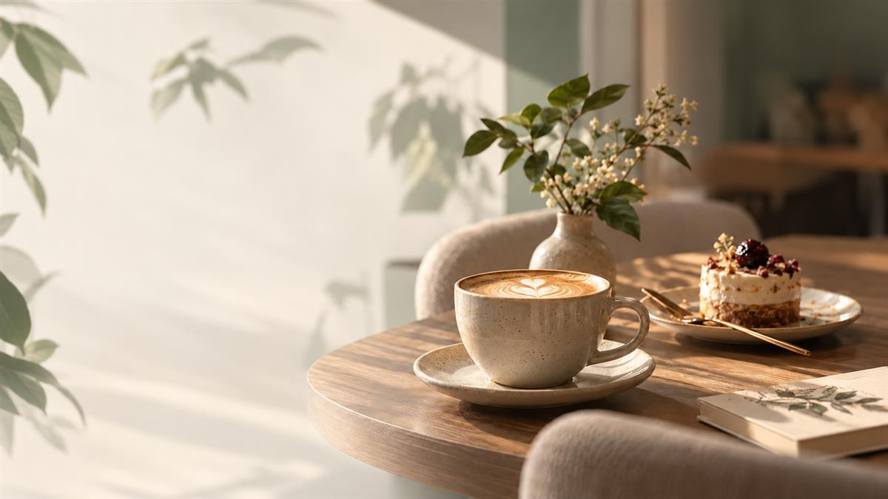
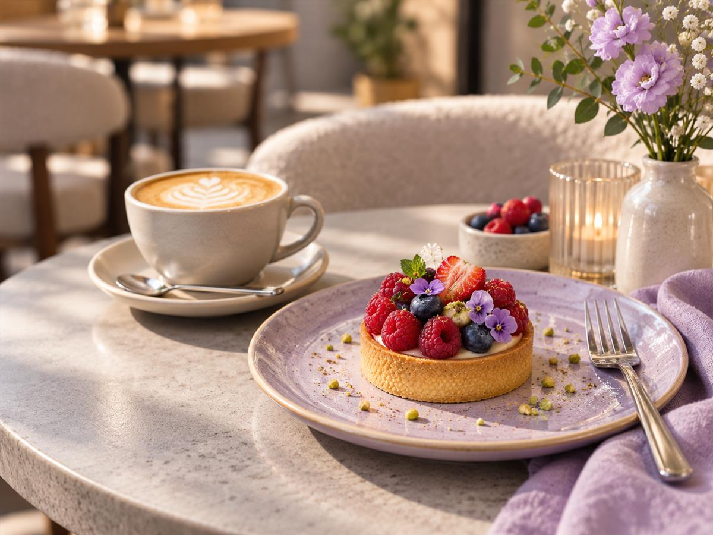
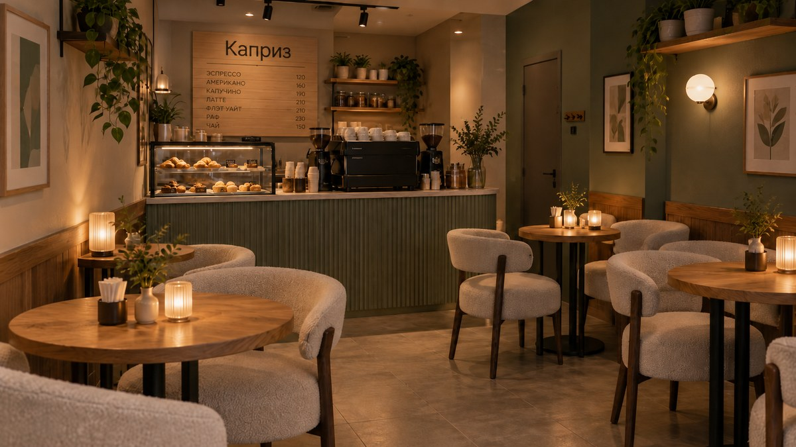
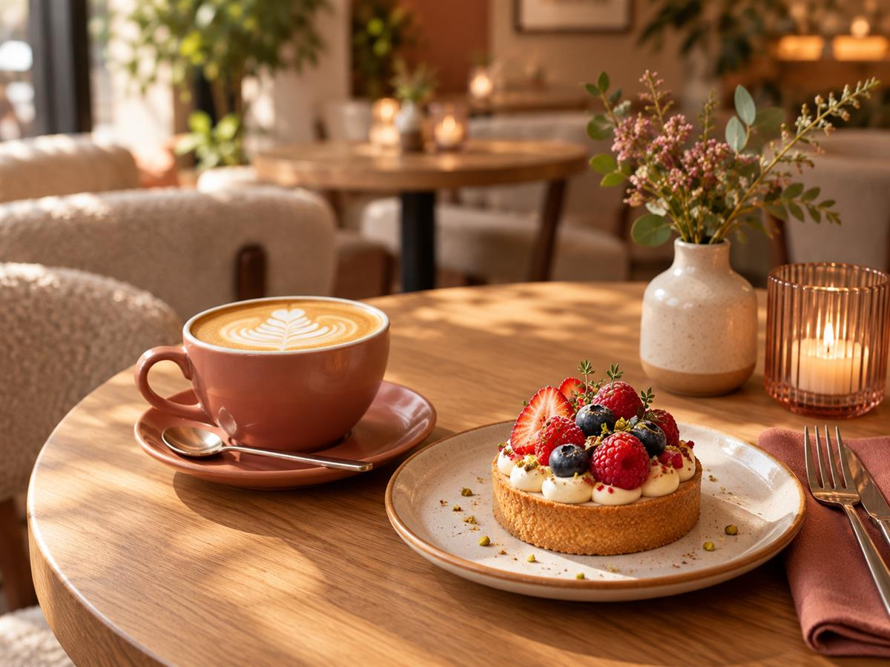

КОФЕЙНЯ «КАПРИЗ»
У каждого дня есть место для маленького каприза
Кофе, десерты и уютная атмосфера для приятных встреч и небольшого отдыха. Совсем рядом с домом.


О КОФЕЙНЕ
Маленькая кофейня, в которой приятно задержаться
Иногда хочется просто сменить обстановку: встретиться с подругой, поговорить за кофе или провести немного времени наедине с собой.
В «Капризе» для этого есть уютные кресла, небольшие столики и мягкий свет, создающий спокойную атмосферу.
Заглядывайте, когда захочется сделать небольшую паузу среди повседневных дел.
МАЛЕНЬКИЕ РАДОСТИ КАЖДОГО ДНЯ
Для приятного момента не нужен особый повод
Встретиться с близкими
Пригласить подругу на кофе, поделиться новостями и провести время вместе.

Отдохнуть от повседневных дел
Удобно устроиться в кресле, выпить кофе и немного переключиться.
Порадовать себя десертом
Иногда достаточно маленького удовольствия, чтобы сделать день приятнее.
АТМОСФЕРА «КАПРИЗА»
Место, с которым хочется познакомиться поближе
Небольшое пространство, тёплый свет и уютные детали — загляните внутрь ещё до первого визита.
ЖДЁМ В ГОСТИ
Ваш маленький «Каприз» — рядом
Необязательно искать особый повод, чтобы выбраться на кофе. Заглядывайте по дороге домой или договоритесь о встрече с близкими.
АДРЕСг. Город, ул. Городская, 10
РЕЖИМ РАБОТЫ9:00 – 21:00
КОНТАКТЫ8 (999) 123-45-67
Концептуальный проект · адрес и карта вымышлены.